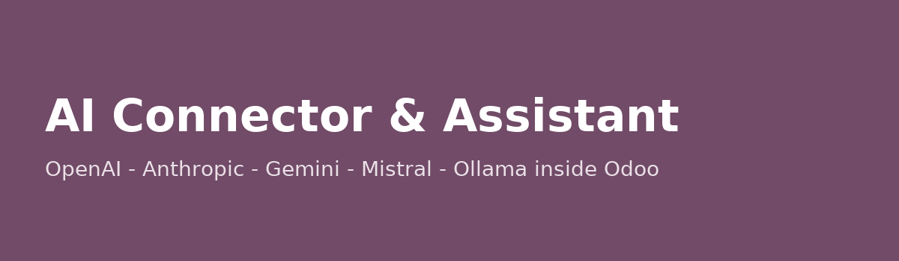
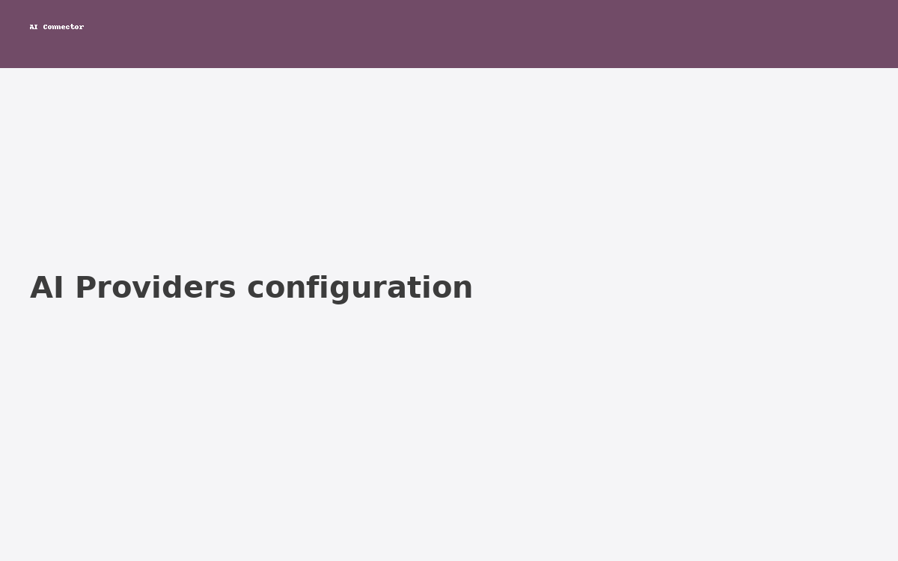
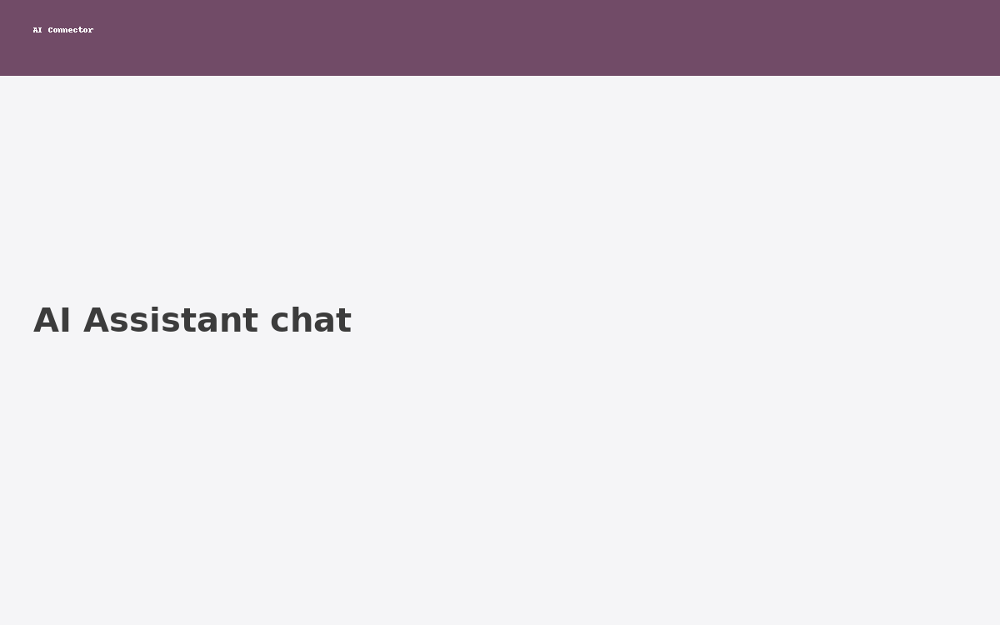
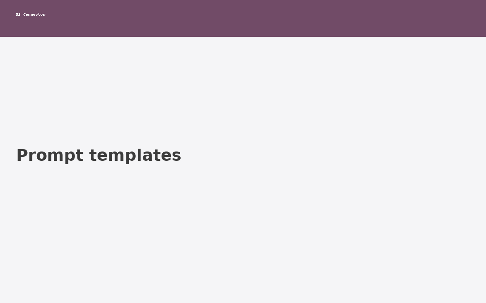

AI Connector & Assistant is a single, vendor-neutral module that lets you talk to the world's leading Large Language Models directly from your Odoo instance. Connect many providers, build reusable prompt templates with variables, run persistent chats and generate content without leaving Odoo.

{{variables}}.
Create reusable templates (summaries, reply emails, product descriptions, lead qualification, ...) with variables that are filled dynamically per record.

This module is distributed under the Odoo Proprietary License (OPL-1). A commercial license is required for production use. Pricing starts at $99 USD (one-time). See the module README for details and volume discounts.
Need a custom integration or on-premise deployment? Contact the author via the "Author" link on this app page.